<section class="phone-container">
  <mat-toolbar>
    <mat-toolbar-row class="phone-toolbar">
      <button mat-button (click)="opened = !opened">
        
      </button>
      
      <count-down *ngIf="isComputerScreen"></count-down>
    </mat-toolbar-row>
  </mat-toolbar>

  <mat-sidenav-container>
    <mat-sidenav [(opened)]="opened" mode="over">
      <mat-list>
        <mat-list-item><a routerLink="">בית</a></mat-list-item>
        <mat-list-item><a routerLink="info">מידע</a></mat-list-item>
        <mat-list-item><a routerLink="registration">הרשמה</a></mat-list-item>
        <mat-list-item><a routerLink="runners">רצים</a></mat-list-item>
        <mat-list-item><a routerLink="gallery">תמונות</a></mat-list-item>
        <mat-list-item> <a routerLink="donation">תרומה</a></mat-list-item>
      </mat-list>
    </mat-sidenav>
    <mat-sidenav-content>
      <router-outlet> </router-outlet>
    </mat-sidenav-content>
  </mat-sidenav-container>
</section>
